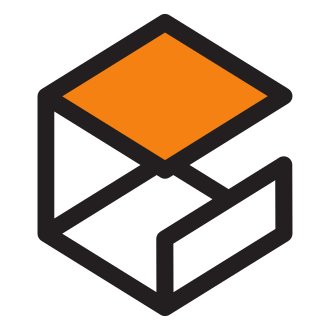
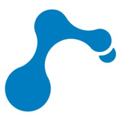
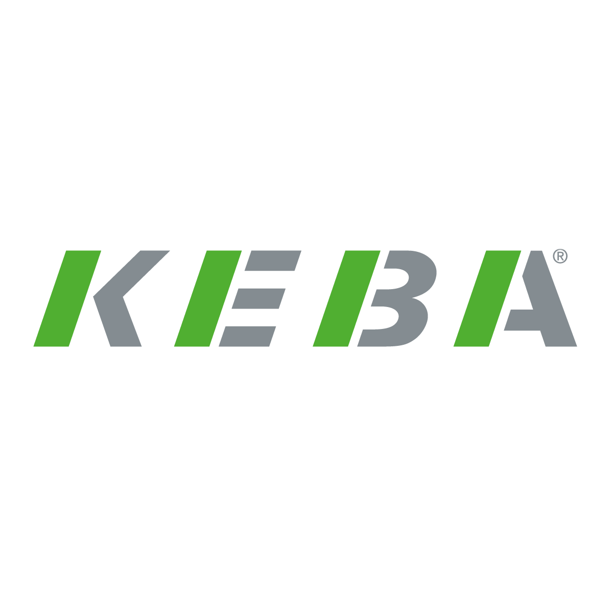

PythonWorkflow scripting and robotics support tooling
Master's thesis
Industrial robotics thesis at KEBA Group
The thesis focused on translating robotics logic into industrial machine-operation workflows. It connected planning, execution, and deployment constraints rather than stopping at simulation-only results.
Software and tools used
Core robotics software, controller-side tooling, and communication stack used in the industrial thesis workflow.

ROS 1Middleware transition across existing and modern robot workflows
ROS 2Modern robotics communication and workflow architecture

GazeboRobot simulation and environment testing

RVizRobot visualization and debugging workflow

drag&botSimulation validation and robot program testing
WebSocketsRealtime communication for web-based tooling

KeMotionKEBA robot controller environment and industrial execution context

KEBA controller programmingController-side programming and industrial execution logic

Sensor integrationSensor integration and I/O understanding
Problem space
The core problem was to build a robot workflow that could be useful in a real industrial setting, where sequence reliability, motion feasibility, gripping logic, cell geometry, and deployment constraints all matter at the same time.
System objective
The thesis focused on a 6-axis autonomous robot workflow for machine operation. The goal was not only to demonstrate movement, but to make the complete operation flow practical enough for industrial execution logic.
Key work areas
- Robot programming for machine interaction and workflow execution.
- Motion planning for constrained industrial operation.
- Design and development of a lightweight web-based joint path planner for simulation workflow support.
- Collision-aware logic and re-grip handling during execution.
- Alignment between simulation output and real-cell limits.
Joint path planner contribution
To streamline testing when validating robot programs in drag&bot simulations, I designed and developed a lightweight web-based joint path planner focused on practical workflow support rather than only algorithmic experimentation.
- Accepted start and goal joint angles as inputs.
- Generated interpolated joint waypoints automatically.
- Visualized the resulting motion path for quick checking.
- Exported CSV files for further validation in simulation workflows.
- Kept the design modular so advanced planners such as RRT-Connect and collision checking could be added later.
Engineering challenges addressed
- Handling practical constraints instead of simulation-only assumptions.
- Connecting robot path decisions to machine-operation requirements.
- Managing reliability when geometry, sequence, and gripping conditions change.
- Thinking in terms of deployment readiness rather than isolated algorithms.
Technical value
This work strengthened my understanding of how robotics decisions change when safety, geometry, sequence reliability, and deployment readiness are part of the requirement. It built stronger judgment around industrial robotics tradeoffs and execution planning, including how small internal tools can accelerate testing and validation.
Why it matters in the portfolio
This thesis is one of the strongest pieces of evidence in the portfolio because it connects robotics software reasoning directly to industrial implementation reality. It is the clearest example of planning-to-deployment engineering work, and it also shows initiative in building tooling to support simulation-based workflow validation.
Presentation and collaboration
Part of the work included presenting progress and discussing robotics-related implementation decisions with international team members inside KEBA Group Stuttgart, strengthening technical communication and project explanation skills.
Supporting industrial exposure
- KEBA robotic HMI and controller training.
- Robotics safety regulation and real robot workshop practice.
- Trade fair participation supporting industrial visibility and context.
- Exposure to industrial workflows beyond a university project environment.
Get in touch
Use the links below to contact me, review where I fit best, explore my work, or request my CV through the website form.